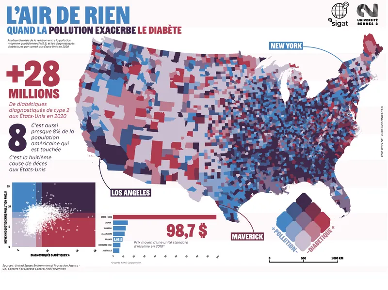

Dans le cadre du master, un exercice portait sur la réalisation d'une carte bivariée croisant deux indicateurs spatiaux. J'ai choisi de m'intéresser à la relation entre pollution de l'air et santé publique aux États-Unis.
Cette visualisation explore les corrélations spatiales entre la qualité de l'air (PM2.5) et la prévalence du diabète de type 2. L'approche bivariée permet de révéler des schémas géographiques souvent invisibles dans des analyses unidimensionnelles.
Le projet s'inscrit dans une réflexion plus large sur les déterminants environnementaux de la santé et les inégalités d'exposition à la pollution selon les territoires.
La carte combine deux bases de données à l'échelle des comtés américains : les concentrations annuelles moyennes de particules fines (PM2.5) issues de l'EPA, et les taux de diabète de type 2 rapportés par les CDC.
Une symbologie bivariée en 3x3 classes a été construite dans QGIS, à partir d'une matrice de couleurs spécialement pensée pour croiser ces deux dimensions. La mise en page finale a été réalisée sous Illustrator, en intégrant graphiques, cartouche et éléments de lecture visuelle.
La carte met en évidence des regroupements géographiques clairs dans le Sud-Est des États-Unis — notamment en Louisiane, Mississippi, Alabama et Arkansas — où fortes concentrations de pollution de l'air (PM2.5) coïncident avec des taux de diabète particulièrement élevés.
Les Appalaches présentent également une corrélation notable entre mauvaise qualité de l'air et prévalence du diabète. À l'inverse, plusieurs zones de l'Ouest, notamment la Californie, affichent une forte pollution mais une prévalence plus faible du diabète, révélant des contrastes intéressants.
Cette carte met en lumière l'intérêt de l'analyse bivariée pour explorer les effets cumulés de facteurs environnementaux et sanitaires à l'échelle territoriale.